Seminar · Shruthi Muthukumar · 49 slides
Efficient language models: train big, prune and quantize smart, deploy small.
A trained LLM has far more weights, and far more bits per weight,
than it needs to keep working. This seminar covers three ways to
cut that cost. Pruning removes weights, and the talk follows it
from the Lottery Ticket Hypothesis and the second-order methods of
the early 1990s to Wanda, SparseGPT, PruneNet and expert pruning
in MoE models. Quantization stores weights in fewer bits, here
through DFloat11 (lossless) and QServe (4-bit weights, 8-bit
activations, 4-bit KV cache). The last part changes the
computation itself. NoMAD replaces the multiply-adds in attention
with table lookups so that LLMs decode quickly on CPUs.
Seminar
49 slides
Shruthi Muthukumar
§0The deck at a glance
Slides 1–5 ask whether a model needs its full cost to keep its
abilities, and use the Lottery Ticket Hypothesis to argue that you
should train a big model and shrink it afterwards. Slides 6–21 are
about pruning. They start with what kinds of sparsity hardware can
actually use, then cover how to choose which weights to remove
(OBD, OBS, Wanda, SparseGPT), how to prune without calibration data
(PruneNet), and how to prune whole experts in an MoE model (MoNE).
Slides 22–37 are about quantization. After a recap of number formats
and the scale-and-zero-point recipe, they cover DFloat11, which
compresses BF16 weights to about 11 bits with no loss at all, and
QServe, which runs 4-bit weights on 8-bit hardware. Slides 38–48
cover NoMAD-Attention, which computes attention scores on a CPU
with table lookups in SIMD registers instead of multiply-adds.
Lecture 13 already covered the core of quantization (number formats,
absmax scaling, outliers, SmoothQuant and GPTQ). This page explains
those parts briefly and links back to the lecture, and it spends
more time on what the seminar adds.
§1Do we need the whole model?
The opening slides pose the question for the whole talk, then use
the Lottery Ticket Hypothesis to explain why the answer is
"train big, then shrink" rather than "train small".
Slide 01 / 49
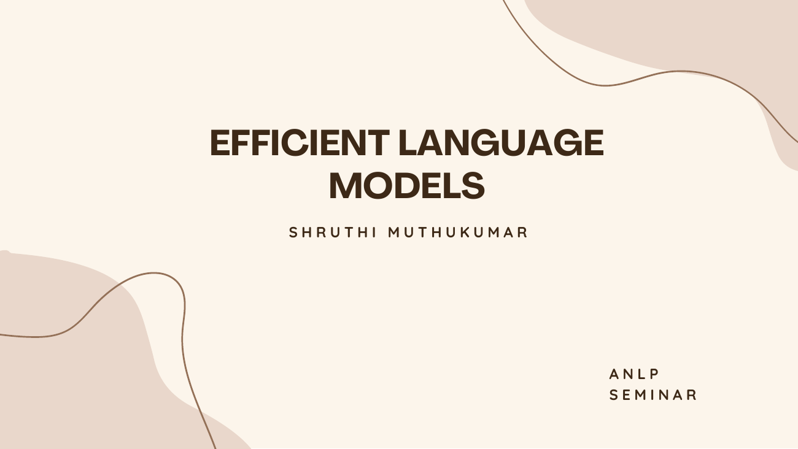
slide 01 · title
On the slide
Title card for Shruthi Muthukumar's seminar on efficient language models.
Where this fits
"Efficient" here means cheaper to store and run once training is done. The talk has three parts.
Pruning removes weights, quantization stores the remaining weights in fewer bits, and NoMAD changes
how attention is computed. Lecture 13 covered quantization in depth, so expect some overlap there.
Slide 02 / 49
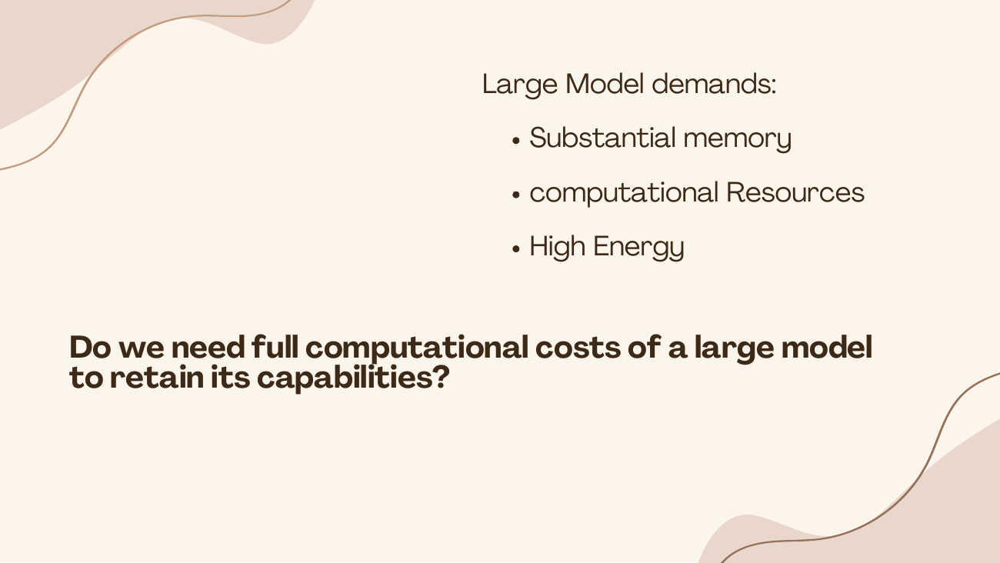
slide 02 · the question
On the slide
Large models need a lot of memory, compute and energy. Do we have to pay all of that to keep what the
model can do?
Putting a number on it
A 7B-parameter model in FP16 needs 7 × 109 × 2 bytes = 14 GB just for its weights, before
any KV cache. That already rules out most consumer GPUs. Lecture 13, slide 2 works through why memory size
also limits decoding speed.
The talk's answer is no. A trained model has a lot of redundancy, both in how many weights it has and
in how precisely each one is stored. The hard part is finding the redundancy without damaging the
model.
Slide 03 / 49
slide 03 · why not train the small model directly?
On the slide
If a pruned network works just as well, why not train that small network from the start and save the
training cost too? The answer given is that the networks found by pruning are harder to train from
scratch.
What this means
Pruning gives you a sparse pattern, a mask saying which weights survive. If you take that mask, fill
it with fresh random weights and train, you usually get a worse model than the one pruning produced.
The sparse shape alone is not enough. How it was found also counts, and the next slide
says what.
Slide 04 / 49
![Lottery Ticket Hypothesis. Initialise the model with random weights. Train until convergence. Use magnitude of weights as measure to remove lower weights. 2 kinds of retraining: initialise the weights to the dense model's initial weights, and initialise to random values. Which converges faster? Random initialisation: slower learning and lower test accuracy. Winning tickets uncovered through heavy use of training data: hypothesize that the structure of winning tickets encodes an inductive bias customized to the learning task at hand.](../assets/seminars/S-efficient-lms/slide-04.png)
slide 04 · the Lottery Ticket Hypothesis
On the slide
The Lottery Ticket experiment (Frankle and Carbin, 2018). Train a dense network, prune its
smallest-magnitude weights, then retrain the survivors in two ways. One resets them to the values they
had at initialisation, and the other gives them new random values. The reset version learns faster and
reaches higher test accuracy.
The procedure, step by step
- Initialise the dense network with random weights θ0 and save a copy.
- Train to convergence, giving θT.
- Remove, say, the 20% of weights with the smallest |θT|. This gives a mask m.
- Reset every surviving weight to its value in θ0, not θT, and train
m ⊙ θ0 again.
- Repeat. After n rounds of removing 20%, a fraction 0.8n survives,
which is 33% after 5 rounds and 10.7% after 10.
The control experiment uses the same mask but new random starting values. It does worse. So a
"winning ticket" is the mask together with the starting values that happened to land in it. The slide's
phrase about inductive bias means that the mask, found using the training data, encodes a structure
that suits the task.
✦ Key takeaway
This answers slide 3. You can't know the winning ticket before training the big network, because the
big network is how you find it. So the practical recipe is to train big and shrink afterwards.
Slide 05 / 49
slide 05 · train big, prune/quantize smart, deploy small
On the slide
A good model comes from architecture, scale, data quality and inductive bias together. The motto for
the rest of the talk is "train big, prune or quantize smart, deploy small".
What to take from it
Scale is what lets training find good structure, as the lottery ticket result showed. Compression
then keeps that structure and throws away the rest. Every method that follows is a way of doing the
"smart" step, which means deciding what is safe to remove or round.
§2What sparsity buys on real hardware
Setting weights to zero only helps if the zeros can be stored and
skipped cheaply. These two slides compare three patterns of
sparsity by that test.
Slide 06 / 49
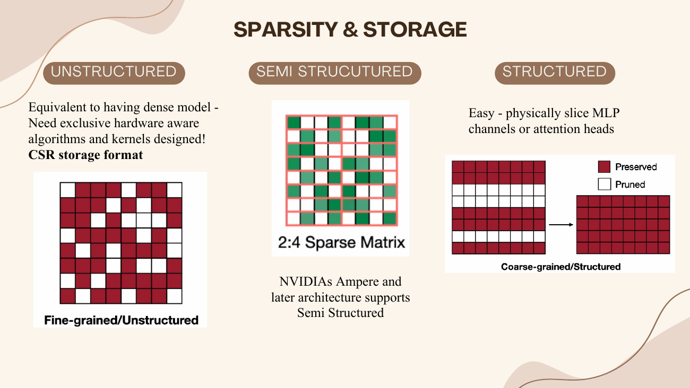
slide 06 · unstructured, 2:4 and structured sparsity
On the slide
Three kinds of sparsity. Unstructured sparsity lets any weight be zero and needs a sparse format such
as CSR plus special kernels. Semi-structured 2:4 sparsity keeps exactly 2 of every 4 consecutive
weights, and NVIDIA GPUs from Ampere onwards support it in hardware. Structured sparsity removes whole
rows, channels or heads, leaving a smaller dense matrix.
Why unstructured sparsity is "equivalent to dense"
CSR (compressed sparse row) stores each nonzero value together with its column index. Take a matrix
at 50% sparsity with FP16 values and 32-bit column indices. Each kept weight costs 2 + 4 = 6 bytes, and
half the weights are kept, so the cost is 3 bytes per original weight. The dense matrix costs 2. The
sparse version is bigger. With 16-bit indices it costs exactly 2 bytes, so you break even.
On top of that, GPUs are bad at skipping zeros scattered at random, so unstructured sparsity rarely
makes inference faster unless it is extreme.
Why 2:4 works
Take 8 FP16 weights. Dense storage is 16 bytes. Under 2:4, you keep 4 values (8 bytes) and a 2-bit
position for each of them (4 × 2 bits = 1 byte), so 9 bytes in total. Because every group of 4 has the
same shape, the hardware knows exactly where to look, which is what slide 7 shows.
Structured
Removing a whole neuron from an MLP deletes a row of the up-projection and the matching column of the
down-projection. What is left is an ordinary smaller dense matrix, so any hardware runs it faster. The
cost is that you remove large blocks at once, which hurts accuracy more than removing scattered single
weights.
Slide 07 / 49
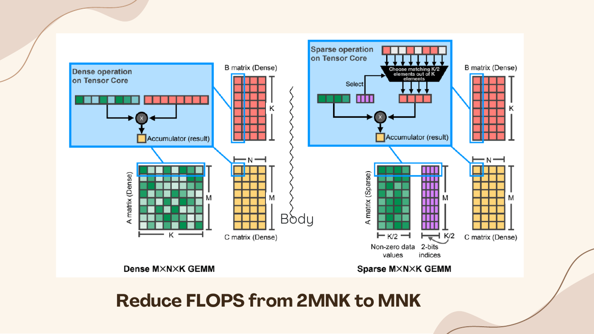
slide 07 · 2:4 sparse GEMM on tensor cores
On the slide
On the left is a normal matrix multiply, A (M × K) times B
(K × N). On the right, A is 2:4 sparse and stored as M ×
K/2 values plus 2-bit indices. The tensor core uses the indices to pick the matching half of
B's entries and skips the rest.
Counting the work
Each of the M × N outputs is a dot product of length K, which is
K multiplies and K adds. That gives 2MNK FLOPs. For M = N =
K = 4096 that is about 1.37 × 1011. With 2:4 sparsity each dot product only covers
the K/2 nonzeros, so the count halves to MNK.
⚠ Watch out
Halving the FLOPs of the matrix multiply does not halve the model's runtime. Attention, norms and
memory traffic are unchanged, so the end-to-end speed-up is smaller than 2×.
§3Which weight to remove: OBD, OBS and the pipeline
Magnitude is a guess at importance. These slides replace the guess
with the actual increase in loss, estimated with second
derivatives. The same idea returns in SparseGPT and, in Lecture 13,
in GPTQ.
Slide 08 / 49
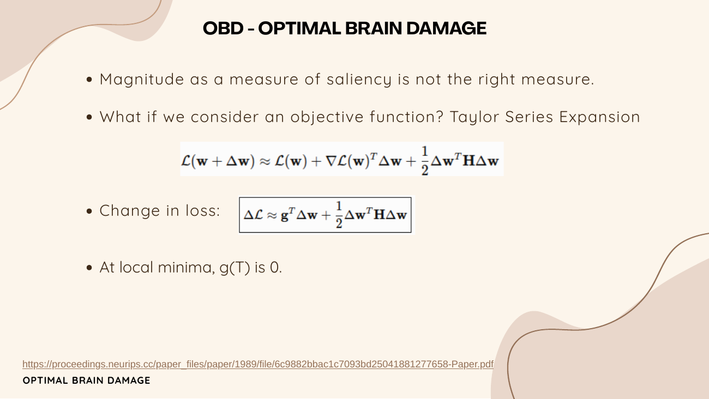
slide 08 · OBD estimates the loss increase
On the slide
Optimal Brain Damage (LeCun et al., 1989) measures how much the loss would go up if a weight were
removed. It uses a second-order Taylor expansion, and at a trained minimum the gradient term drops
out.
Why magnitude is not enough
The Hessian H holds the second derivatives of the loss. Its diagonal entry
Hii says how sharply the loss curves as weight i moves. A small
weight in a direction where the loss is very curved can matter more than a large weight in a flat
direction. Removing weight i means setting Δw = −wi
ei, a move of size wi along that one
axis, and the formula above says what that costs.
Slide 09 / 49
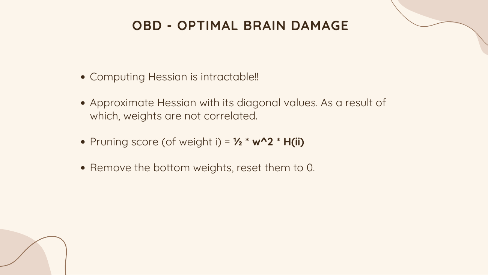
slide 09 · OBD's diagonal approximation
On the slide
The full Hessian is too large to compute, so OBD keeps only its diagonal. Each weight then gets the
score ½ wi2 Hii, and the
lowest-scoring weights are set to zero.
How big is "intractable"?
The Hessian has one entry per pair of weights. A 7B model has 7 × 109 weights, so its
Hessian has about 4.9 × 1019 entries. The diagonal has just 7 × 109.
A two-weight example
Let w = (0.1, 2.0) with Hessian diagonal (100, 0.01).
| Weight | |w| | OBD score ½ w² Hii |
|---|
| w1 | 0.1 | ½ × 0.01 × 100 = 0.5 |
| w2 | 2.0 | ½ × 4 × 0.01 = 0.02 |
Magnitude pruning would remove w1. OBD removes w2, because
the loss hardly changes along that direction.
Using only the diagonal means treating weights as independent. Removing one weight then gives no
reason to change any other, which is why OBD simply zeroes the losers and leaves the rest alone.
Slide 10 / 49
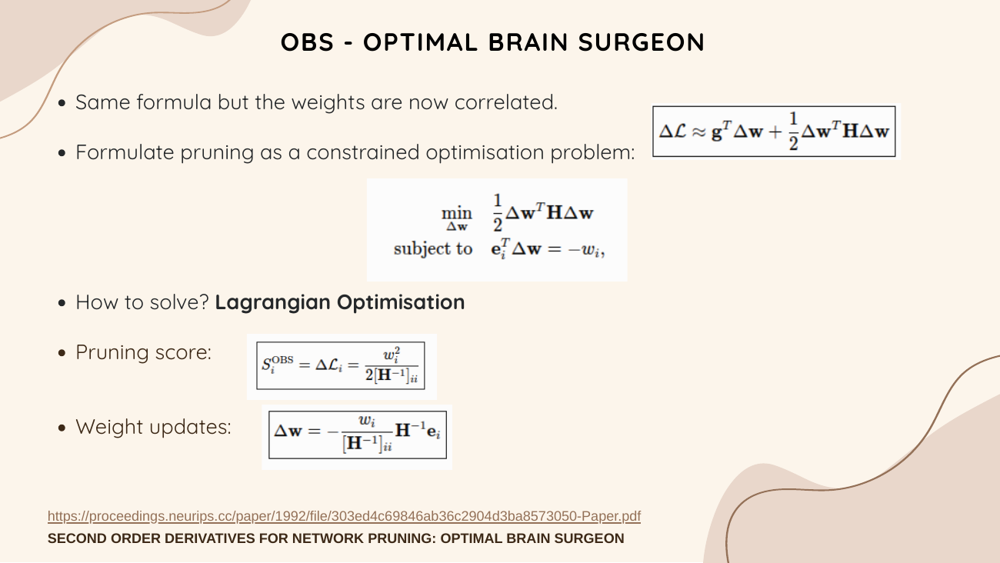
slide 10 · OBS prunes one weight and fixes the others
On the slide
Optimal Brain Surgeon (Hassibi and Stork, 1992) keeps the full Hessian. It asks for the smallest
loss increase over all changes Δw that set weight i to zero. Solving with a
Lagrange multiplier gives a score for each weight and an update for all the others.
A two-weight example
Let w = (1, 0.5) and H = [[2, 1], [1, 2]]. The off-diagonal 1 says the two
weights interact. Then H−1 = (1/3)[[2, −1], [−1, 2]], so both diagonal
entries of H−1 are 2/3.
- Score for w1 = 1 / (2 × 2/3) = 0.75.
- Score for w2 = 0.25 / (2 × 2/3) = 0.1875. This is lower, so prune
w2.
- Update = −(0.5 / (2/3)) × (column 2 of H−1) = −0.75 × (−1/3, 2/3) =
(0.25, −0.5).
- New weights are (1.25, 0). The second weight is gone and the first has grown to make up for it.
The loss increase is ½ ΔwTHΔw = 0.1875.
Had you just zeroed w2 without touching w1, the increase would
be ½ × 0.25 × 2 = 0.25. OBS loses less because the surviving weight takes over part of the removed
weight's job.
Under the hood
If H is diagonal, [H−1]ii =
1/Hii, and the OBS score becomes ½ wi2
Hii, exactly OBD's score. So OBD is the special case of OBS where you
pretend the weights don't interact.
Slide 11 / 49
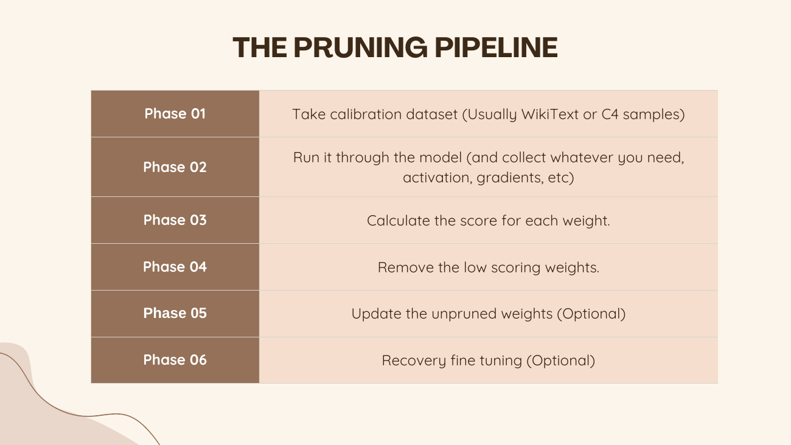
slide 11 · the six-phase pruning pipeline
On the slide
Most LLM pruning methods follow six steps. Run a small calibration set through the model, collect
statistics, score every weight, remove the low scorers, optionally adjust the survivors, and optionally
fine-tune to recover accuracy.
Using it as a map
Each method in the next few slides is a choice of which phases to run and how.
| Method | Calibration data | Score | Updates survivors |
|---|
| Magnitude | no | |w| | no |
| Wanda (slide 12) | yes | |w| × activation norm | no |
| SparseGPT (slide 13) | yes | OBS score | yes |
| PruneNet (slide 14) | no | learned policy | no |
Phases 1 and 2 are where calibration data comes in. Methods that look at activations only know about
the inputs they saw, so the choice of WikiText or C4 samples affects the result.
§4Pruning LLMs in one shot: Wanda and SparseGPT
Retraining a large model after pruning is expensive, so both of
these methods prune once, layer by layer, using a few calibration
samples. Wanda adds activations to the score. SparseGPT brings OBS to
LLM scale.
Slide 12 / 49
![Wanda. Left: magnitude pruning, S = |W|, weights grouped per layer. Right: Wanda, S = |W| · ||X||₂, with activation norms 1, 2, 8, 3, importance grouped per output row; pruned weights shown for each. Formula S_ij = |W_ij| · ||X_j||₂. Table 1 comparing Magnitude (no weight update, no calibration data, metric |W_ij|, complexity O(1)), SparseGPT (weight update, calibration data, metric |W|²/diag[(XXᵀ+λI)⁻¹], complexity O(d³_hidden)), and Wanda (no weight update, calibration data, |W_ij|·||X_j||₂, O(d²_hidden)).](../assets/seminars/S-efficient-lms/slide-12.png)
slide 12 · Wanda scores weights with activations
On the slide
Wanda (Sun et al., 2023) scores each weight by its magnitude times the size of the input feature it
multiplies, and compares weights within each output row instead of across the whole layer.
Why multiply by the activation
Output i of the layer is yi = Σj
Wijxj. The contribution of one weight is
Wijxj, so its size depends on both factors.
‖Xj‖2 is the norm of input feature j over all the
calibration tokens. LLMs have a few input channels with very large values (the outliers from Lecture 13 §5), and a small weight
feeding one of those channels can matter more than a large weight feeding a quiet one.
The figure, row by row
Activation norms are (1, 2, 8, 3), and we keep 2 of 4 weights in each row.
| Row of W | Scores |W|·‖X‖ | Kept | Pruned row |
|---|
| 4, 0, 1, −1 | 4, 0, 8, 3 | 8 and 4 | 4, 0, 1, 0 |
| 3, −2, −1, −3 | 3, 4, 8, 9 | 9 and 8 | 0, 0, −1, −3 |
| −3, 1, 0, 2 | 3, 2, 0, 6 | 6 and 3 | −3, 0, 0, 2 |
Look at row 1. The weights 1 and −1 have the same magnitude, but 1 multiplies the channel with norm 8,
so it survives, while −1 multiplies a channel with norm 3 and is dropped. In row 2, the 3 is dropped
even though it is the joint largest weight, because it sits on the quiet channel with norm 1.
The table
Wanda needs calibration data to compute the norms but never updates the weights that remain. That
keeps its cost at about one pass over the weights, O(d2) per layer. SparseGPT
(next slide) inverts a d × d matrix, which costs O(d3), but it
also corrects the survivors.
Slide 13 / 49
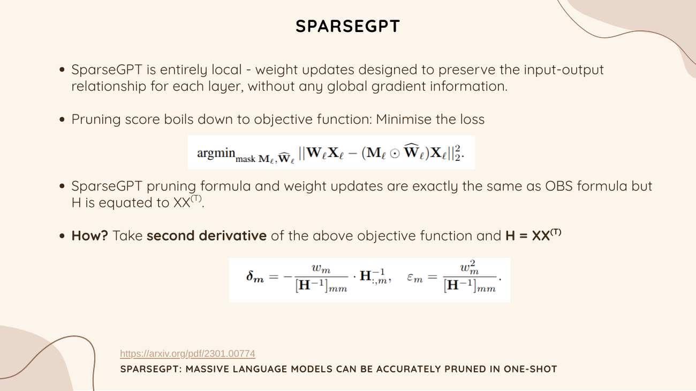
slide 13 · SparseGPT: OBS with H = XXᵀ
On the slide
SparseGPT (Frantar and Alistarh, 2023) prunes one layer at a time. For each layer it looks for a mask
and new weights so that the pruned layer gives nearly the same outputs on the calibration inputs as the
original. With that objective, the OBS formulas apply directly, with H =
XXT.
Where H = XXT comes from
The layer's loss is ‖WX − ŴX‖2. Take one row of
weights. The loss is a quadratic in that row, and the second derivative of a quadratic
‖wTX‖2 with respect to w is
2XXT. The factor 2 cancels in the formulas. So the Hessian only depends on
the calibration inputs, and every row of the layer shares it. That is what makes OBS affordable at LLM
scale, because one d × d inverse serves the whole layer.
Compare with the toy example on slide 10. There, H was made up. Here, it is measured
from the data the layer actually sees, and the update δm is the same "let the
survivors compensate" step.
→ Same machinery, different job
GPTQ, from the same authors, uses exactly this setup to round weights to 4 bits instead of zeroing
them. Lecture 13 §8 walks through
OBQ and GPTQ in detail. The λI in slide 12's table is the same damping term, added
so that XXT can always be inverted.
§5Calibration-free pruning: PruneNet
PruneNet removes the calibration data and the recovery fine-tuning
from the pipeline. It learns which FFN neurons to slice by looking
only at the weights, and judges a slice by whether it keeps the
weight matrix's spectrum intact.
Slide 14 / 49
![PruneNet. Calibration dataset: high quality calibration data is required; repeatedly calibrating models for different compression ratios hinders efficiency and makes it difficult to adapt to varying hardware constraints. Structured vs unstructured: unstructured gives no effective benefits. Recovery finetuning: an additional step of pruning; can we avoid weight updates and finetuning and still get the same results? PruneNet: effective time is 15 minutes. Train a separate policy learner whose parameters produce importance scores and select which FFN dimensions to keep or prune. Paper: You Only Prune Once.](../assets/seminars/S-efficient-lms/slide-14.png)
slide 14 · problems PruneNet tries to remove
On the slide
Three complaints about the standard pipeline. Calibration data has to be good, and you must
recalibrate for every compression ratio you want. Unstructured pruning gives no real speed-up. Recovery
fine-tuning is an extra, costly step. PruneNet answers all three with a small policy network that
decides which FFN dimensions to keep, and the whole thing takes about 15 minutes.
What "FFN dimensions" means
An FFN block computes Wdown σ(Wupx). Each hidden
neuron owns one row of Wup and one column of Wdown. Removing a
neuron removes both, and the matrices stay dense, only smaller. This is structured pruning from slide 6,
so the savings show up on any hardware.
The paper's title, "You Only Prune Once", refers to the policy. Once trained, it can produce slices
for different compression ratios without recalibrating.
Slide 15 / 49
![Primer. W is a rectangular matrix and its Gram matrix W·Wᵀ is symmetric. Spectral properties: singular values of W equal the square roots of the eigenvalues of W·Wᵀ. Theorem 3.2 (Poincaré Separation Theorem): for symmetric A (n×n) and semi-orthogonal B (n×r, BᵀB = I_r), eigenvalues μ of BᵀAB satisfy λ_i ≤ μ_i ≤ λ_{n−r+i}; the range of eigenvalues of BᵀAB is a subset of the range of eigenvalues of A. Bᵀ(W·Wᵀ)B = W′(W′)ᵀ where W′ = BᵀW. The singular values of the reduced weight matrix are bounded by those of the original.](../assets/seminars/S-efficient-lms/slide-15.png)
slide 15 · primer on slicing and singular values
On the slide
A bit of linear algebra. The singular values of W are the square roots of the eigenvalues
of WWT. Slicing rows out of W can be written as W′ =
BTW, and the Poincaré separation theorem says the singular values of
W′ stay inside the range of the original ones.
Why slicing fits the theorem
To keep rows 1 and 3 of a 4-row matrix, take B to be columns 1 and 3 of the 4 × 4 identity.
Then BTW is exactly those two rows, and BTB =
I2, so B is semi-orthogonal as the theorem requires. Also,
BT(WWT)B is just the rows and columns 1 and 3 of
WWT.
A tiny check
Let A = WWT = [[4, 1], [1, 2]]. Its eigenvalues are 3 ± √2, about 1.59 and
4.41. Keep only the first row, and the reduced matrix is [4], with eigenvalue 4. That lies between 1.59
and 4.41, as the theorem promises.
So slicing can't create singular values larger than the largest original one or smaller than the
smallest. The next slide shows why that guarantee is not enough.
Slide 16 / 49
![Even if the compressed values remain within the original range, they can be distributed differently within that range; the CDF can shift or become more skewed. The paper uses this to motivate preserving the spectrum's distribution, rather than relying only on the theorem's bounds. Plots of the cumulative distribution of singular values for Layer 1 and Layer 32 at compression 0%, 25%, 50% and 75%; the curves shift left as compression increases. Side note: the Poincaré theorem constrains the compressed spectrum within the original range; empirically the spectrum is bounded in that range but the distributions don't align.](../assets/seminars/S-efficient-lms/slide-16.png)
slide 16 · bounded range, shifted distribution
On the slide
Plots of the cumulative distribution (CDF) of singular values at 0%, 25%, 50% and 75% compression, for
the first and last layers. The values stay in range, but the curves move left as compression grows.
Reading the plot
A CDF at value v is the fraction of singular values below v. A curve further left
means more small singular values. At 75% compression in Layer 1, the purple curve starts at about 0.33,
so roughly a third of the singular values are near zero, while the uncompressed curve starts at 0.
Small singular values are directions in which the layer barely transforms its input, so a shift to the
left means the sliced layer has lost some of what it could express.
PruneNet's goal follows from this. Keep the whole distribution of singular values close to the
original, not just the range.
Slide 17 / 49
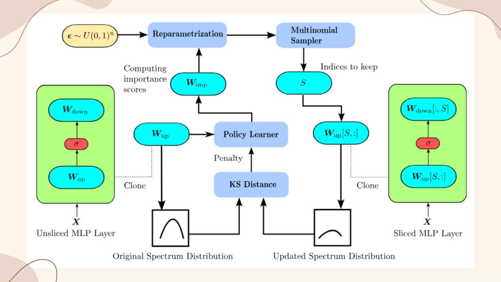
slide 17 · the PruneNet training loop
On the slide
The full loop. A policy learner reads Wup and outputs an importance score per
neuron. A sampler picks the set S of neurons to keep. The layer is sliced to
Wup[S, :] and Wdown[:, S]. The penalty is
the KS distance between the singular-value distributions before and after slicing.
The pieces
- Sampling with noise. Picking the top-scoring neurons is not differentiable, so the
policy could not learn from the penalty. Adding uniform noise and sampling (the reparametrization
trick) lets gradients flow back to the scores.
- KS distance. The Kolmogorov–Smirnov distance is the largest vertical gap between two
CDFs. If at singular value 1.0 the original CDF is 0.10 and the sliced one is 0.35, the gap there is
0.25, and KS is the largest such gap over all values. On slide 16's plot, it measures how far a
dashed curve strays from the solid one.
Nothing in this loop needs input data. The policy only looks at weights and their spectra, which is
why PruneNet is calibration-free.
Slide 18 / 49
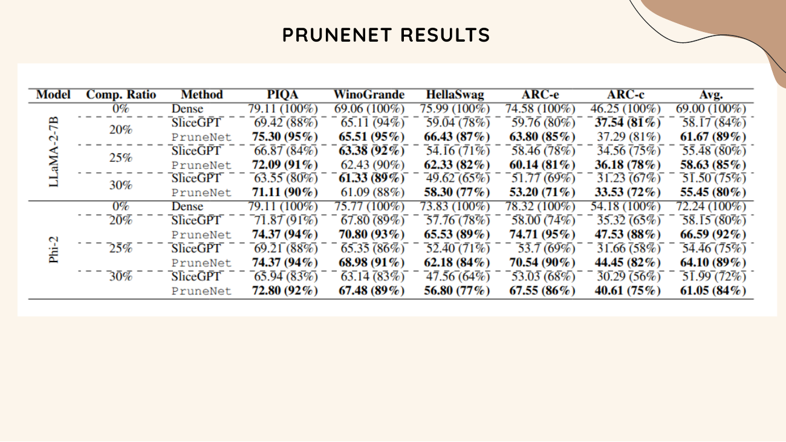
slide 18 · PruneNet vs SliceGPT
On the slide
Zero-shot accuracy on five benchmarks for LLaMA-2-7B and Phi-2 at 20–30% compression. The percentages
in brackets are the fraction of the dense model's score that is kept.
What to read off
- LLaMA-2-7B at 20%: PruneNet keeps 89% of the dense average (61.67 against 69.00), and SliceGPT
keeps 84%.
- Phi-2 at 30%: PruneNet keeps 84%, SliceGPT 72%. The gap is wider on the smaller model.
- SliceGPT still wins a few cells, such as ARC-c at 20% on LLaMA-2-7B and WinoGrande at 25% and 30%.
Removing 20–30% of the FFN still costs 10–20% of average accuracy, so this is not free. The point is
that PruneNet gets there without calibration data or fine-tuning, and does better than a method that
uses calibration data.
§6Pruning experts: MoNE
In a mixture-of-experts model, most of the parameters sit in the
experts, so experts are the natural unit to prune. MoNE replaces a
pruned expert with a constant instead of deleting it.
Lecture 8
covers how MoE layers and routing work.
Slide 19 / 49
slide 19 · drop experts, or replace them?
On the slide
Earlier methods remove the experts that the router rarely picks. MoNE instead swaps each pruned expert
for a "novice", a much cheaper stand-in.
Why not just delete?
The router was trained with every expert present. If a removed expert gets picked, its share of the
output simply vanishes, and the layer's output shifts. A stand-in that returns roughly what the expert
used to return keeps that share in place. Usage frequency alone also misses a case. An expert might be
picked often but produce nearly the same output every time, and such an expert is cheap to imitate.
Slide 20 / 49
![MoNE formulas. φ_var_i: the norm of the standard deviation of expert i's outputs over calibration tokens routed to it. Ē_i: the mean output of expert i over those tokens. φ_freq_i: the sum of gate values G_i(x) over tokens routed to expert i, divided by the number of such tokens. Pruning score is the product of the variance-based redundancy score and the frequency-based score. The redundant experts are replaced by constants. MoNE(x) = sum over kept selected experts of G_i(x)·E_i(x) plus sum over pruned selected experts of G_i(x)·N_i.](../assets/seminars/S-efficient-lms/slide-20.png)
slide 20 · MoNE's score and the novice
On the slide
Each expert gets two numbers from calibration data, counting only the tokens routed to it. One is how
much its output varies (φvar). The other is the average gate weight the router gives it
(φfreq). Their product is the score, and the lowest-scoring experts are replaced by a
constant vector Ni.
A small example
Say an expert sees three tokens and outputs (1.0, 2.0), (1.1, 2.1) and (0.9, 1.9). Its mean output is
(1.0, 2.0). The standard deviation in each dimension is 0.1, so φvar = ‖(0.1, 0.1)‖ ≈ 0.14.
That is tiny compared with the outputs themselves. Replacing this expert with the constant (1.0, 2.0)
changes its output by about 0.1 per dimension on these tokens, and it replaces a whole MLP with one
stored vector.
The forward pass
MoNE(x) has two sums. Selected experts that were kept run as usual and are weighted by their
gate Gi(x). Selected experts that were pruned contribute
Gi(x) · Ni, which costs one
multiply-add per dimension. The router is untouched, so it still sends tokens to the same slots.
⚠ Notation
φfreq as written averages the gate value over the tokens that picked the expert. It
measures how much weight the router gives the expert when it is chosen, rather than counting how
often it is chosen.
Slide 21 / 49
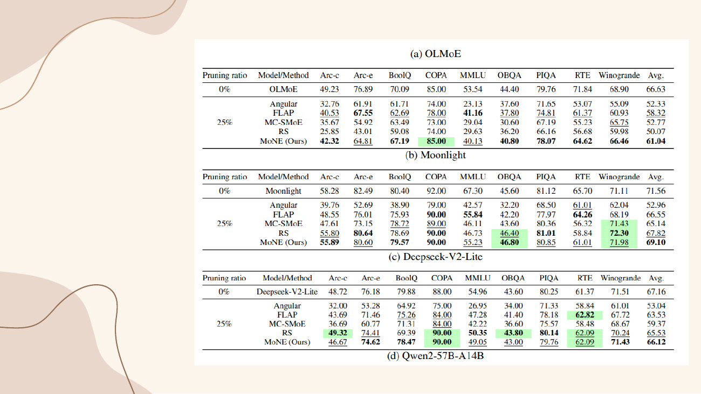
slide 21 · MoNE results at 25% expert pruning
On the slide
Results with 25% of experts pruned on three MoE models, against four other pruning methods.
What to read off
| Model | Dense avg | MoNE avg | Best other |
|---|
| OLMoE | 66.63 | 61.04 | 58.32 (FLAP) |
| Moonlight | 71.56 | 69.10 | 67.82 (RS) |
| Deepseek-V2-Lite | 67.16 | 66.12 | 65.53 (RS) |
MoNE has the best average on all three, though not on every benchmark. On Deepseek-V2-Lite, a quarter
of the experts go and the average drops by about one point. OLMoE suffers more, which suggests that
its experts are less redundant.
§7Why quantize, and the basics
The talk switches from removing weights to storing them with fewer
bits. These four slides recap material that
Lecture 13
covers in more depth.
Slide 22 / 49
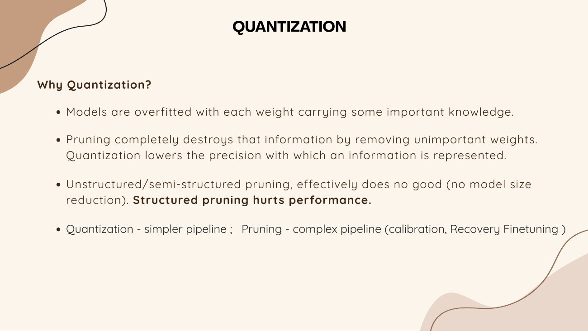
slide 22 · why quantization instead of pruning
On the slide
The case for quantization. Pruning deletes a weight and everything it knew, while quantization keeps
every weight at lower precision. Fine-grained pruning saves little memory, coarse pruning hurts
accuracy, and the pruning pipeline is more complicated.
The intuition
Pruning answers the question "which weights can be exactly zero?" Quantization answers "how precisely
must each weight be stored?" A weight of 0.0137 rounded to 0.0140 still carries almost all of its
information. Set to 0, it carries none. With billions of weights that each hold a little knowledge,
rounding is usually the gentler change.
⚠ Watch out
"No model size reduction" holds for unstructured sparsity (slide 6 showed that CSR can be bigger
than dense). 2:4 sparsity does save memory, 9 bytes instead of 16 per 8 FP16 weights, and slide 7
showed it halves matmul FLOPs on recent NVIDIA GPUs. The fair comparison is that 4-bit quantization
saves more (4× from FP16) and works on any hardware.
Slide 23 / 49
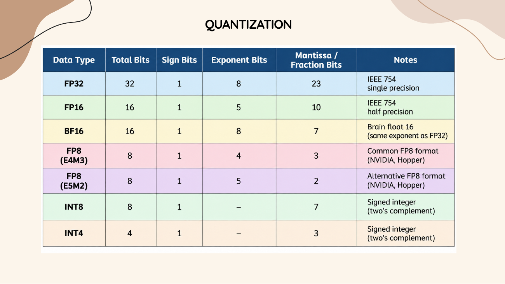
slide 23 · number formats
On the slide
The formats that come up in the rest of the talk, with how many bits go to sign, exponent and
mantissa.
How to read the table
Exponent bits set the range (how large or small a number can be). Mantissa bits set the
precision (how finely you can tell nearby numbers apart). BF16 keeps FP32's 8 exponent bits,
so it covers the same range as FP32 but with only 7 mantissa bits. That is why it is the usual format
for training and for released weights, and it is the format DFloat11 compresses on slides 26–33. The
two FP8 formats make the same trade in miniature. E4M3 has more precision, and E5M2 has more range.
Lecture 13 §2 shows how these bits turn
into a value.
⚠ Notation
INT8 and INT4 in two's complement have no separate sign bit the way floats do. The top bit carries
a weight of −128 (or −8), which gives ranges of −128 to 127 and −8 to 7. The "1 sign bit" column is a
convenient way to say they are signed.
Slide 24 / 49
![Symmetric and asymmetric quantization of the values 5.47, 3.08, −7.59, 0, −1.95, −4.57, 10.8. Symmetric maps [−10.8, 10.8] to [−127, 127], giving 64, 36, −89, 0, −23, −54, 127. Asymmetric maps [−7.59, 10.8] to the full integer range with a zero point, giving 53, 20, −127, −23, −50, −86, 127. Formulas: s = max|x_i| / (2^(b−1) − 1); x̂ = s(q − z); s = (x_max − x_min)/(q_max − q_min); z = round(q_min − x_min/s). Remember scale and zero point are stored in original precision. No zero point in the case of symmetric quantization.](../assets/seminars/S-efficient-lms/slide-24.png)
slide 24 · symmetric vs asymmetric quantization
On the slide
The same seven numbers quantized to INT8 in two ways. Symmetric quantization uses one scale and keeps
0 at 0. Asymmetric quantization adds a zero point so that the integer range covers exactly
[min, max].
Symmetric, worked
The largest magnitude is 10.8, so s = 10.8 / 127 ≈ 0.0850. Then 5.47 / 0.0850 ≈ 64.3, which
rounds to 64. Likewise 3.08 → 36, −7.59 → −89, −1.95 → −23, −4.57 → −54 and 10.8 → 127. These are the
values in the left-hand row. Notice that nothing maps below −89, so the codes from −128 to −90 are never
used. That waste is what asymmetric quantization fixes.
Asymmetric, worked
The range is 10.8 − (−7.59) = 18.39, spread over 255 steps, so s ≈ 0.0721. The zero point is
z = round(−128 − (−7.59 / 0.0721)) = round(−22.8) = −23. A value maps to round(x/s)
+ z, so 0 → −23 (the highlighted cell), 5.47 → 53 and 10.8 → 127. Dequantizing reverses it,
x̂ = s(q − z), so 53 comes back as 0.0721 × 76 ≈ 5.48.
The scale and zero point are stored in the original precision, one pair per group of weights. That
overhead adds up at 4 bits, as Lecture
13 §4 works out.
⚠ Watch out
By the formula, −7.59 lands on −128. The figure shows −127 because it clips to a symmetric integer
range. Either way the error is under one step.
Slide 25 / 49
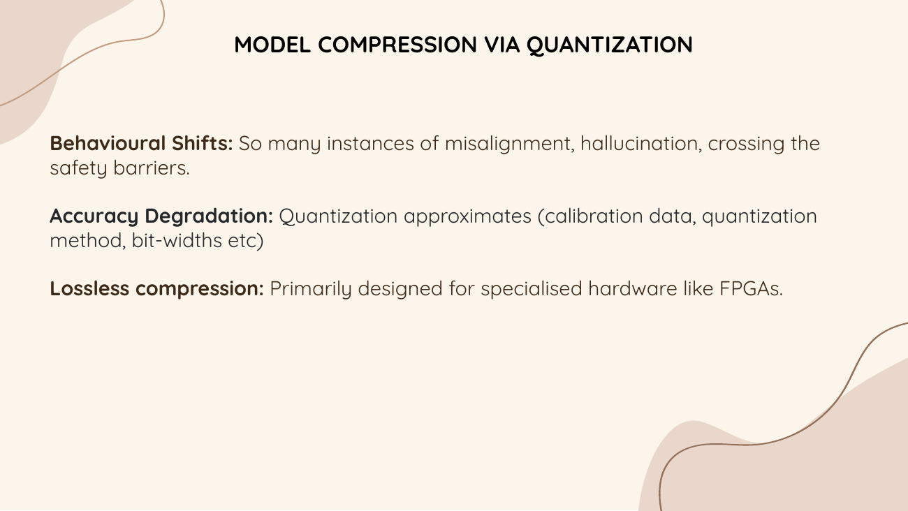
slide 25 · the costs of lossy quantization
On the slide
Three problems. Quantized models can behave differently, including on safety and alignment.
Accuracy drops by an amount that depends on the calibration data, method and bit width. Lossless
alternatives exist, but they were built for specialised hardware such as FPGAs.
Why this sets up DFloat11
Benchmark averages can hide behaviour changes. A quantized model can score within a point on MMLU and
still refuse, comply or hallucinate differently on specific prompts. The only way to rule that out
entirely is to keep every weight bit-for-bit identical. The next section shows a way to do that and
still save about 30% of memory on an ordinary GPU.
§8Lossless compression: DFloat11
BF16 spends 8 bits on an exponent that, in trained LLM weights,
takes only a handful of values. DFloat11 Huffman-codes the exponent
and keeps sign and mantissa as they are. The result is about 11
bits per weight with exactly the same model. Most of these slides
are about decoding the variable-length codes fast enough on a GPU.
Slide 26 / 49
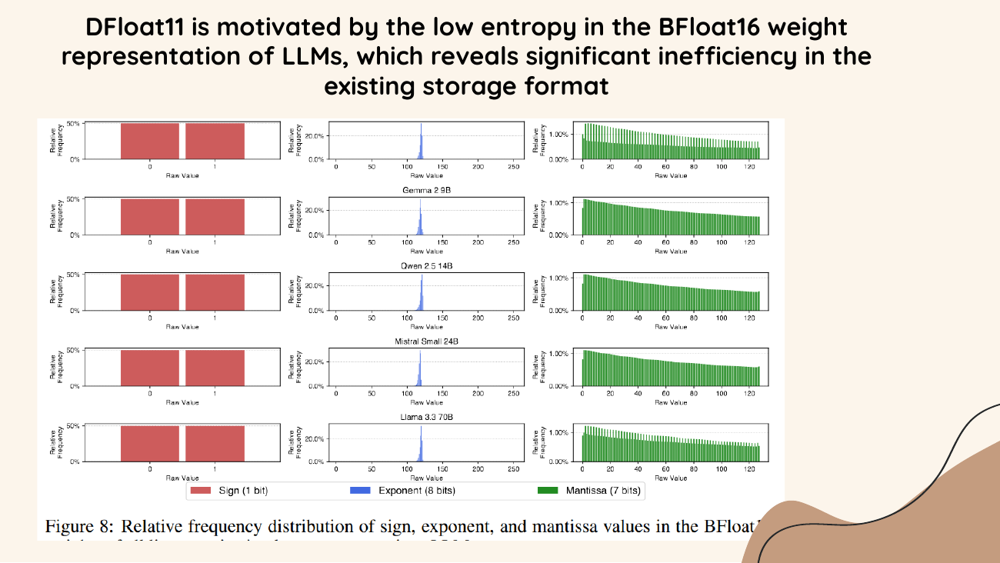
slide 26 · BF16 weights have low-entropy exponents
On the slide
Histograms of the three parts of BF16 weights in several LLMs. The sign is 0 or 1 about half the time
each. The mantissa values are spread fairly evenly. The exponent piles up in a narrow spike around 120
out of a possible 0–255.
Why that means wasted bits
A field deserves its bits only if its values are unpredictable. The sign and the mantissa are close to
uniform, so you can't store them in fewer bits. The exponent always lands in the same small band, and
that band follows from how weights are distributed. Most weights are small numbers like 0.01 or 0.001,
and in BF16 such numbers all have exponents a little below 127. So 8 bits per exponent is far more than
the information it carries.
Slide 27 / 49
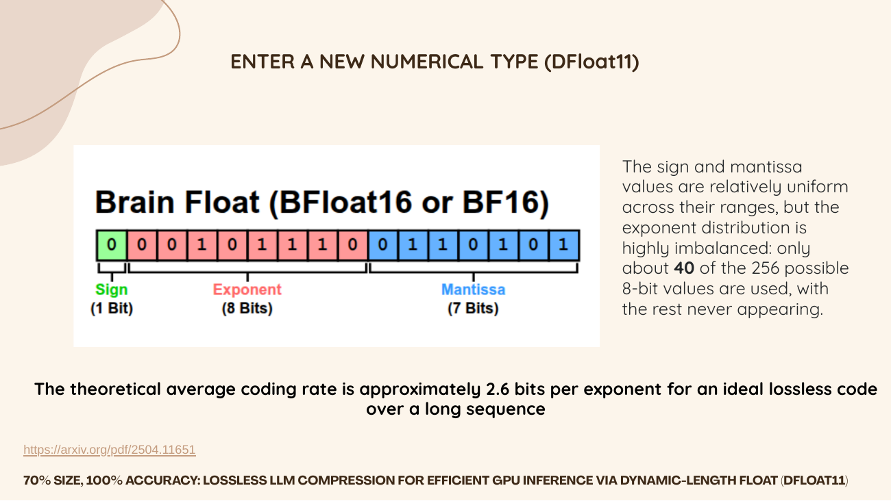
slide 27 · about 40 exponents, about 2.6 bits each
On the slide
Only about 40 of the 256 possible exponent values occur, and an ideal code would need about 2.6 bits
per exponent on average.
The arithmetic
Even a plain fixed-length code would help. 40 values fit in 6 bits (26 = 64), giving 1 + 6
+ 7 = 14 bits per weight. A variable-length code does better because the 40 values are far from equally
common. At 2.6 bits per exponent, a weight costs 1 + 2.6 + 7 = 10.6 bits, which is 66% of 16. Slide 32
reports 10.8–10.9 bits in practice, so the real code comes within about a quarter of a bit of the
ideal.
Slide 28 / 49
![Use Huffman trees: frequent values get shorter codes, rare values get longer codes. Codes are prefix-free. Figure: encoded exponents with dynamic bit widths averaging about 2.6 bits, e.g. 1 0 | 1 1 0 | 0 ..., decoded with a Huffman tree where code 0 is exponent 119, code 10 is exponent 121, code 110 is exponent 118. Sign and mantissa are stored with fixed widths of 1 and 7 bits, e.g. 0 0110110 and 1 0001001. Exponents are encoded and tightly bit-packed into a byte array EncodedExponent, while sign and mantissa are stored uncompressed in a separate byte array PackedSignMantissa.](../assets/seminars/S-efficient-lms/slide-28.png)
slide 28 · Huffman-coding the exponent
On the slide
DFloat11 Huffman-codes the exponents. Common exponents get short codes and rare ones get long codes,
and no code is the start of another, so a bit stream can be split unambiguously. Exponents go in one
packed array, and sign and mantissa bytes go in another, unchanged.
Huffman in one example
Suppose four symbols occur 50%, 25%, 12.5% and 12.5% of the time. Huffman gives them codes 0, 10, 110
and 111. The average length is 0.5 × 1 + 0.25 × 2 + 0.125 × 3 + 0.125 × 3 = 1.75 bits, against 2 bits
for a fixed code and 8 for a raw byte.
Decoding the figure
The exponent stream starts 1 0 1 1 0 0. Read from the root. "1" is not a complete code, but "10" is,
so the first exponent is 121. Next, "110" gives 118. Then "0" gives 119. Pair these with the fixed-width
sign and mantissa bytes.
- Element 1 has sign 0, exponent 121 and mantissa 0110110 = 54. Its value is (1 + 54/128) ×
2121−127 = 1.421875 × 2−6 ≈ 0.0222.
- Element 2 has sign 1, exponent 118 and mantissa 0001001 = 9. Its value is −(1 + 9/128) ×
2−9 ≈ −0.00209.
These are exactly the original BF16 values, bit for bit. Nothing was rounded.
Slide 29 / 49
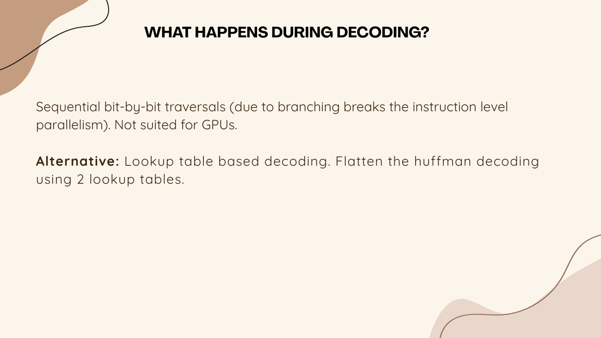
slide 29 · tree walking is bad for GPUs
On the slide
Walking the tree one bit at a time is sequential and full of branches, which GPUs handle badly. The
fix is to decode with lookup tables.
Why GPUs dislike it
A GPU runs threads in groups that execute the same instruction together. In a tree walk, each thread's
next step depends on the bit it just read, so threads in a group want different branches and end up
waiting for each other. There is a second problem. With variable-length codes, you can't know where
element 1000 starts until you have decoded the 999 before it. DFloat11 handles that with extra
bookkeeping that the slides don't go into. These slides focus on making each decode step branch-free.
Slide 30 / 49
![Lookup table based decoding. Huffman tree with symbols A (code 0), B (100), C (101), D (110), E (1110), F (1111). A 16-entry lookup table indexed by 4-bit codes: entries 0–7 are A, 8–9 B, 10–11 C, 12–13 D, 14 E, 15 F. A code-length table: A 1, B 3, C 3, D 3, E 4, F 4. Figure 11 caption: decoding can be done by traversing the tree or by two lookup tables, one mapping each L-bit code to its symbol and another storing each symbol's code length. Note: this is still huge since L = 30 to 40, so 2^32 values won't fit in SRAM of the GPU.](../assets/seminars/S-efficient-lms/slide-30.png)
slide 30 · two-table decoding
On the slide
Replace the tree with two tables. Read the next L bits, where L is the longest code
length, and use them as an index into a table of symbols. A second table gives that symbol's real
length, which tells you how far to advance.
How it works on the figure
The longest code is 4 bits, so the table has 24 = 16 entries. Every index starting with 0
points to A, because A's code is just "0" and the other 3 bits belong to the next symbol. Suppose the
next 4 bits are 1101. Entry 13 is D, and D's length is 3, so you advance 3 bits. There are no
branches, only two memory reads.
Why it doesn't scale
The table needs 2L entries. Real exponent codes can be about 32 bits long for the
rarest values, and 232 one-byte entries is 4 GiB. Fast on-chip GPU memory holds a tiny
fraction of that, so the table would sit in slow memory and every lookup would be expensive.
Slide 31 / 49
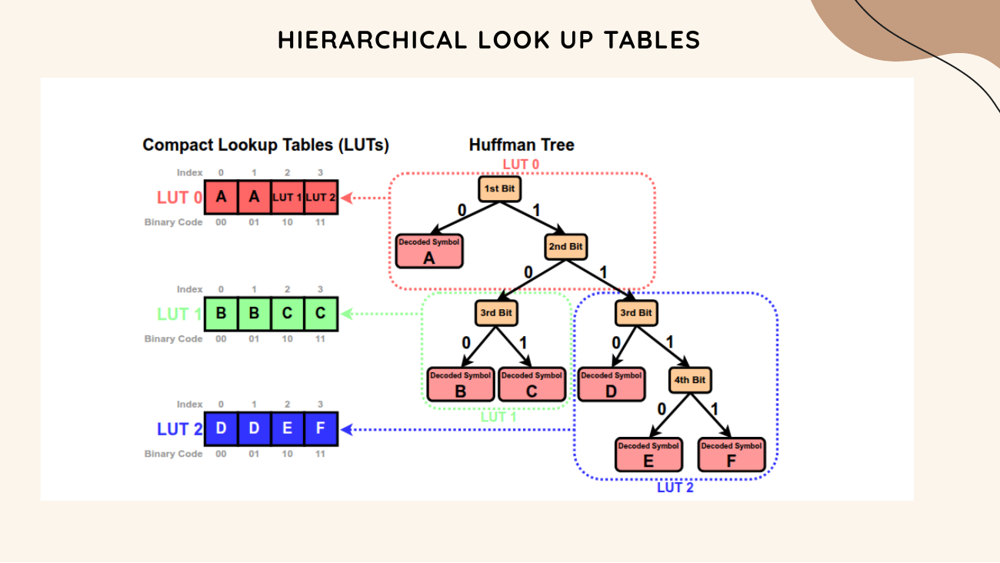
slide 31 · hierarchical lookup tables
On the slide
Split the big table into a chain of small ones. Each table reads a few bits and either returns a
symbol or points to the next table.
Decoding a stream by hand
Encode D, A, F with the codes from slide 30. You get 110 + 0 + 1111 = 11001111. Decode it with the
small tables.
- At bit 0, read "11". LUT 0 says go to LUT 2. Read the next two bits, "00". LUT 2 gives D, and D's
length is 3, so move to bit 3.
- At bit 3, read "01". LUT 0 gives A, with length 1, so move to bit 4.
- At bit 4, read "11", which leads to LUT 2. The next bits are "11", which gives F with length 4.
The output is D, A, F, which is correct. Each step costs at most a couple of small lookups.
The figure uses 2-bit chunks to stay readable. DFloat11 itself uses 8-bit chunks, so each table has 256
entries, and a code of up to 32 bits needs at most four lookups. Four 256-entry tables fit easily in
a GPU's fast on-chip memory, where the single 4 GiB table never could.
Slide 32 / 49
![Table 1: DF11 statistics for various models. Llama 3.1 8B Instruct 16.06 GB → 10.90 GB (67.84%, 10.85 bits); Llama 3.3 70B 141.11 → 95.40 GB; Llama 3.1 405B 811.71 → 551.22 GB; Qwen 3 14B 29.54 → 20.14 GB; and others, all around 67–70% and 10.8–11.1 bits, including diffusion transformers. Table 2: Llama 3.1 8B Instruct BF16 vs DF11 give identical MMLU 68.010 ± 0.375, TruthfulQA 36.965 ± 1.690, WikiText perplexity 8.649 and C4 perplexity 21.677. Side note: for shorter batch sizes the latency is high compared to BF16, but when BF16 has to offload to CPU, DFloat11 performs 2x faster.](../assets/seminars/S-efficient-lms/slide-32.png)
slide 32 · about 68% of the size, identical outputs
On the slide
Every model shrinks to about 67–70% of its BF16 size, which is 10.8–11.1 bits per weight. Accuracy and
perplexity are identical to the last printed digit. The catch is that at small batch sizes DFloat11 is
slower than plain BF16 when BF16 fits in GPU memory.
Checking the numbers
Llama 3.1 8B goes from 16.06 GB to 10.90 GB. At 10.85 bits per weight, 16.06 × 10.85 / 16 ≈ 10.89 GB,
which matches. The benchmark scores in Table 2 are the same because the weights are the same. Every
matrix multiply sees exactly the original BF16 numbers, decoded just before use.
Where the slowdown comes from
Decoding costs time on every forward pass. When BF16 already fits in memory, that cost is pure
overhead, and it is most visible at small batch sizes. At larger batches, each decoded weight serves
more tokens and the overhead is spread thin. The real win is when BF16 doesn't fit at all, which is the
next slide.
Slide 33 / 49

slide 33 · DF11 fits where BF16 must offload
On the slide
Each setup pairs a model with a GPU that is slightly too small for its BF16 weights. BF16 has to keep
part of the model in CPU memory. DF11 fits entirely on the GPU and wins by a wide margin.
Why it fits
At about 68% of the size, Qwen 3 14B goes from 28 GB to about 19 GB, which fits in 24 GB. Mistral
Small 3 goes from 48 GB to about 32 GB, under 40 GB. QwQ 32B goes from 64 GB to about 44 GB, under
48 GB.
Why it is so much faster
With offloading, the weights in CPU memory have to cross the PCIe bus for every forward pass, which is
far slower than reading GPU memory. At batch size 1, Qwen 3 14B takes about 0.69 s per token with
offloading and about 0.22 s with DF11. Mistral Small 3 drops from about 11.6 s to 0.25 s per token. The
slide's "2× faster" is a floor, and some setups gain far more.
§9W4A8KV4: QServe
QServe stores weights in 4 bits, activations in 8 bits and the KV
cache in 4 bits. It still runs its matrix multiplies on fast INT8
hardware, by turning 4-bit weights back into 8-bit integers cheaply
inside the kernel. It starts from SmoothQuant, which
Lecture 13 §7
covers in detail.
Slide 34 / 49

slide 34 · SmoothQuant recap
On the slide
SmoothQuant's goal was INT8 weights and INT8 activations (W8A8). Weights quantize easily.
Activations have a few channels that are always huge. Giving each activation channel its own scale
would fix that, but INT8 matrix-multiply kernels can't use such scales.
Why per-channel activation scales break INT8 GEMM
In Y = XW, each output is a sum over the inner dimension, Ytj
= Σk XtkWkj. A scale per
token t or per output column j is constant inside that sum, so you can do the sum in
integers and multiply by the scales once at the end. A scale per input channel k changes from
term to term inside the sum, so it can't be pulled out. You would have to rescale every product
separately, which defeats the point of integer hardware.
Slide 35 / 49

slide 35 · migrate the difficulty into the weights
On the slide
Divide each activation channel by sj and multiply the matching weight
row by the same sj. The product is unchanged, the activation outliers
shrink and the weights absorb them.
One channel, worked
Say channel j has activations up to 40 and weights up to 0.5. With α = 0.5, sj
= √40 / √0.5 = √80 ≈ 8.94. After scaling, the activation maximum is 40 / 8.94 ≈ 4.47 and the weight
maximum is 0.5 × 8.94 ≈ 4.47. Both now have the same range, √(40 × 0.5). α controls how the difficulty
is split, and 0.5 shares it equally.
The division of X can be folded into the previous LayerNorm's weights ahead of time, so it
costs nothing at inference. This is what makes W8A8 work, and QServe reuses the same move twice, for
W4A8 and then for the keys.
Slide 36 / 49
![QServe: can we go further down? W4A8KV4. Progressive group quantization figure: FP16 weights W are first quantized per channel to INT8 with s(0) = |W|max / 119 = 8.10/119 = 0.07, e.g. −0.20 → −3. Then each group of INT8 values is quantized to UINT4 with integer scale s(1) and zero point z, e.g. s(1) = round((15 − (−16))/(15 − 0)) = 2, z = 8, q = round(−3/2 + 8) = 7. Dequantizing gives (7 − 8)·2 = −2, and all dequantized values stay within INT8 range for INT8 computation. Text: for W4A8 GEMM, the 4-bit weights are first dequantized into intermediate 8-bit weights and then INT8 matrix multiplication runs as if it were W8A8 per-channel quantization. Protective quantization range.](../assets/seminars/S-efficient-lms/slide-36.png)
slide 36 · progressive group quantization
On the slide
Weights are quantized in two stages. First per channel to INT8, then each small group of those INT8
values to 4-bit unsigned integers with an integer scale and zero point. At run time, the 4-bit values
are expanded back to INT8 using only integer arithmetic, and the multiply runs on INT8 hardware as in
W8A8.
The figure, step by step
- Level 1, FP16 to INT8. The channel's largest magnitude is 8.10. Dividing by 119
instead of 127 gives s(0) = 8.10 / 119 ≈ 0.068, shown as 0.07. The weight −0.20
becomes −0.20 / 0.07 ≈ −2.86, which rounds to −3.
- Level 2, INT8 to UINT4, first group. The group is (−3, −16, −10, 15). Its range is
31 and 4 bits give 15 steps, so s(1) = round(31 / 15) = 2. The zero point is
z = round(16 / 2) = 8. Then −3 maps to round(−1.5 + 8) = 7, −16 to 0 and −10 to 3. The 15
maps to 15.5, which rounds to 16 and is clipped to 15.
- Dequantize. (q − z) × s(1) gives (7 − 8) × 2 =
−2 for the −3, and −16, −10 and 14 for the others. These are INT8 values, close to the originals.
- Second group. The group is (−94, 62, 119, −106), with s(1) = 15
and z = 7. The codes are 1, 11, 15 and 0, and they come back as −90, 60, 120 and −105.
Why 119 and not 127 (the protective range)
Level 2 rounds its scale and zero point to integers, and that can push a dequantized value outside the
group's original range. If it goes beyond what INT8 can hold, the INT8 multiply overflows. Take a group
that uses the full range, (127, −128, 0, 5). It gets s = round(255 / 15) = 17 and z =
round(128 / 17) = 8. Then −128 maps to code 0 and comes back as (0 − 8) × 17 = −136, which is not a
valid INT8. Capping level 1 at ±119 leaves headroom for this overshoot. In the figure, 119 comes back as
120, which still fits.
✦ Key takeaway
The expensive part of low-bit inference is usually converting the weights back before the multiply.
QServe makes that conversion a subtract and a multiply by a small integer on 8-bit values, which is
cheap, and then uses the INT8 hardware unchanged.
Slide 37 / 49
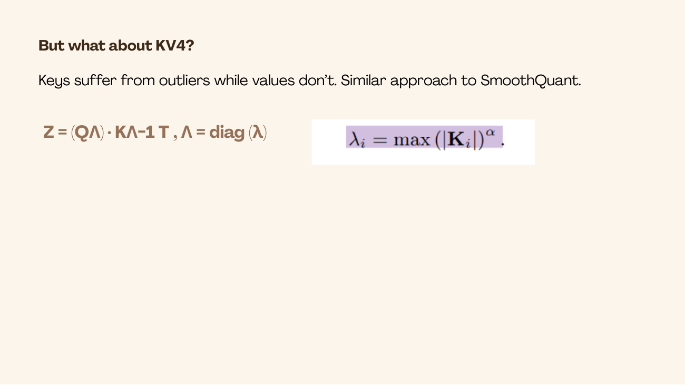
slide 37 · smoothing the keys for a 4-bit KV cache
On the slide
To store the KV cache in 4 bits, QServe applies the SmoothQuant trick to attention. Keys have outlier
channels and values don't, so each key channel is divided by λi and the matching
query channel is multiplied by it.
Why the product is unchanged
(QΛ)(KΛ−1)T = QΛΛ−1KT
= QKT, since Λ is diagonal. The attention scores are exactly the same before
quantization.
Why push the outliers into the query
The keys are cached and read again at every later step, so they are what you want small. The query is
used once and thrown away, and it stays in 16 bits, so it can hold large values without harm. This is
the same move as slide 35, with the cached tensor in the role of the hard-to-quantize one.
What KV4 saves
For a 7B model like LLaMA-2-7B (32 layers, 4096 hidden size), the FP16 KV cache costs 2 × 32 × 4096 × 2
bytes = 0.5 MiB per token. A 4096-token context then needs 2 GiB per sequence, and at 4 bits it needs
0.5 GiB, before counting scales. That leaves room for four times as many sequences in a batch. Lecture 5 sets up this accounting.
§10Attention without multiply-adds: NoMAD
The last part changes the computation instead of the storage.
NoMAD-Attention approximates the query–key dot products with
product quantization, then arranges the lookup tables so that a CPU
can do 16 lookups in one SIMD instruction. Decoding at long context
gets faster, even on a laptop CPU.
Slide 38 / 49
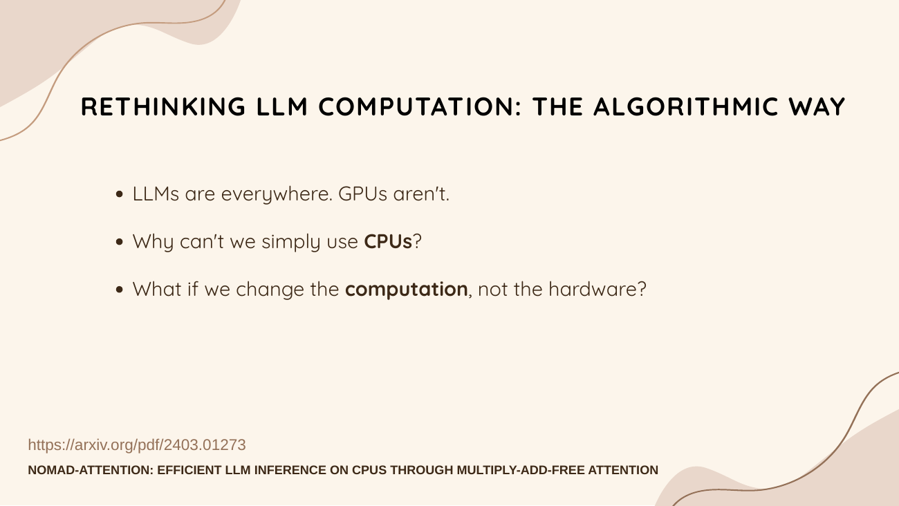
slide 38 · can CPUs run LLMs well?
On the slide
Most devices have a CPU and no capable GPU. Instead of waiting for better hardware, change the
computation so that it suits a CPU.
The idea in one line
CPUs do far fewer multiply-adds per second than GPUs, but they are good at certain table lookups. If
attention can be rewritten as lookups, the CPU's weakness costs much less.
Slide 39 / 49
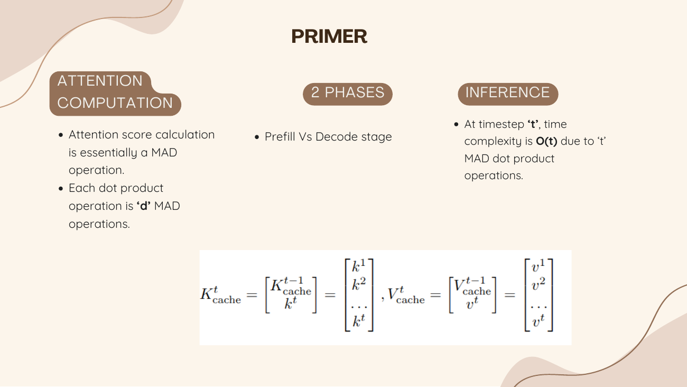
slide 39 · where attention's multiply-adds go
On the slide
Each attention score is a dot product of length d, which is d multiply-adds (MADs).
In the decode phase, the new query is compared with all t cached keys, so the work per step
grows with the context.
Counting
With head dimension d = 128 and 16,000 tokens of context, one decoding step needs 16,000 ×
128 ≈ 2.05 million MADs per head just for the scores. That repeats in every head of every layer, for
every new token. In the prefill phase the whole prompt is processed at once, which is a big matrix
multiply that CPUs handle reasonably. Decode is the step that gets slow as context grows.
Slide 40 / 49
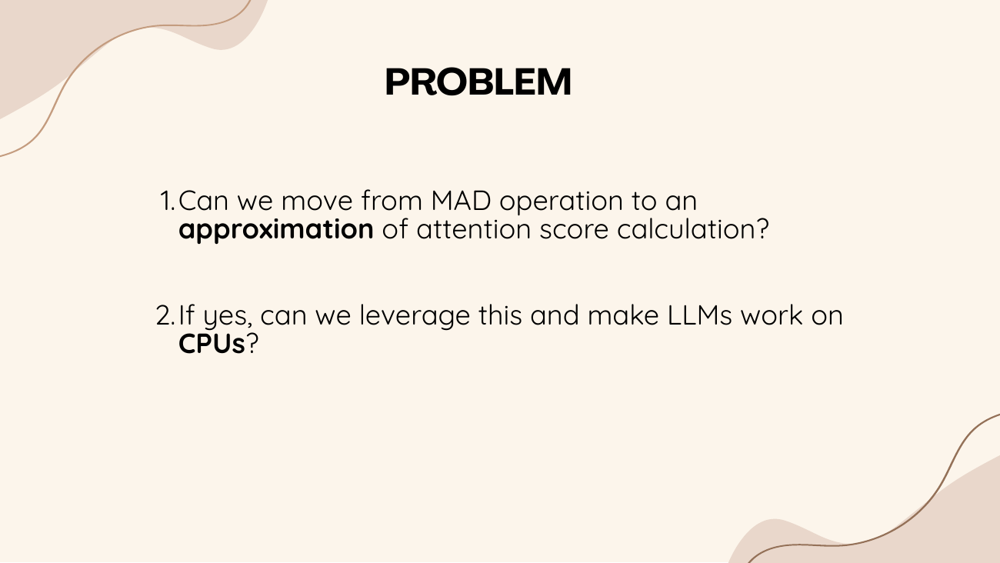
slide 40 · the two questions
On the slide
Can attention scores be approximated without MADs, and does that make CPU inference practical?
The next two slides answer the first question with product quantization. The rest of the section
answers the second.
Slide 41 / 49
![Product quantization, hand-drawn walkthrough. 1: 50k raw vectors of size 1024. 2: chop each vector into m = 8 sub-vectors of 128, giving 8 matrices of 50k × 128. 3: k-means with 256 centroids in each sub-space. 4: 8 bits are enough to store a centroid id, so each 4,096-byte vector becomes 8 bytes. 5: to search with a query vector, split it into 8 sub-vectors, compute similarity with the 256 centroids of each sub-space, then for every stored vector sum the similarities of its 8 centroid ids, sort and select the top K.](../assets/seminars/S-efficient-lms/slide-41.png)
slide 41 · product quantization
On the slide
Product quantization (PQ), shown on 50,000 vectors of dimension 1024. Split each vector into 8 chunks
of 128. Cluster each chunk position into 256 centroids. Store each vector as 8 centroid ids. To compare
a query with every vector, compute its similarity to each centroid once, then score every vector by
adding up 8 table entries.
The memory arithmetic
A raw vector is 1024 × 4 bytes = 4,096 bytes. With 256 centroids, an id fits in one byte, so a vector
becomes 8 bytes, 512 times smaller.
Why search gets cheap
The expensive step is building the query's tables, 8 chunks × 256 centroids, each a 128-long dot
product. That cost doesn't depend on how many vectors you store. After that, each of the 50,000 vectors
costs 8 lookups and 7 additions instead of a 1024-long dot product.
Slide 42 / 49
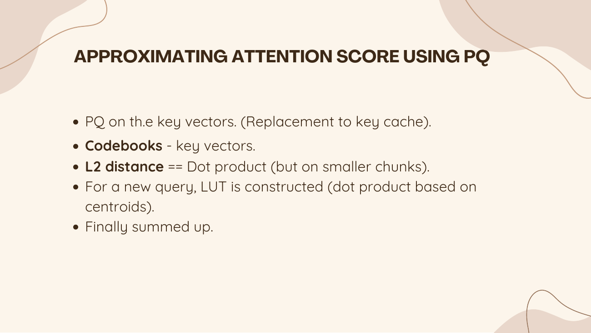
slide 42 · PQ on the key cache
On the slide
Apply PQ to the key cache. Store each key as centroid ids. For each new query, build a table of its
dot products with the centroids, and approximate every score as a sum of table entries.
Why a dot product splits into chunks
q · k is a sum over dimensions, so it equals the sum of the dot products of
matching chunks. Replacing each key chunk with its nearest centroid turns each piece into a table
entry.
A small example
Let d = 4, split into two chunks of 2, with 4 centroids per chunk.
- Chunk 1 centroids are (1, 1), (−1, 0), (0, −1), (0.5, 0.5). Chunk 2 centroids are (−0.5, 0),
(0, 1), (1, 1), (−1, −1).
- The key k = (0.9, 1.1, −0.4, 0.2) is closest to centroid 0 in both chunks, so it is
stored as the codes (0, 0).
- The query q = (2, 1, 0.5, −1) gives table 1 = (2, 1) · each chunk-1 centroid = (3, −2, −1,
1.5), and table 2 = (0.5, −1) · each chunk-2 centroid = (−0.25, −1, −0.5, 0.5).
- The approximate score is table1[0] + table2[0] = 3 − 0.25 = 2.75. The exact score is 2.5.
Building the two tables took 16 MADs, and every cached key now costs 2 lookups and an add, however
long the context is.
Slide 43 / 49
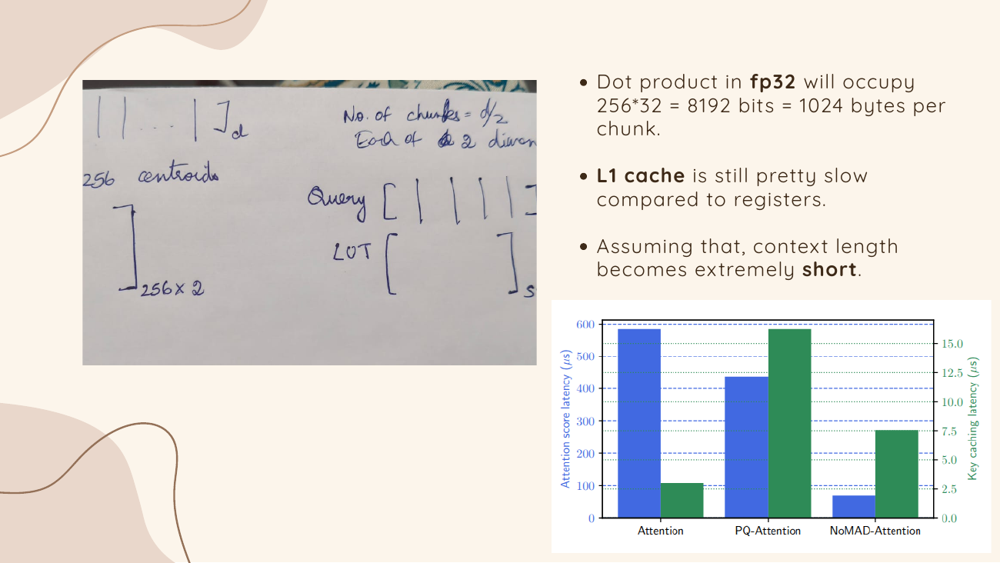
slide 43 · plain PQ is limited by cache speed
On the slide
With 2-dimensional chunks and 256 centroids, each chunk's table holds 256 FP32 values, which is 1 KB.
Those tables live in L1 cache, which is fast but still much slower than registers. The chart shows plain
PQ only modestly faster than ordinary attention, and NoMAD much faster.
The size problem
For a head dimension of 128 split into 2-dimensional chunks, there are 64 chunks, so 64 KB of tables per
query. That is larger than the L1 cache of most CPU cores, so many lookups go further out to slower
caches. Each lookup is also a separate memory access, so you swap one multiply-add for one cache read
and gain little.
Reading the chart
Score computation takes about 585 µs with ordinary attention, about 435 µs with PQ, and about 70 µs with
NoMAD. PQ and NoMAD pay a little more when adding a key to the cache (the green bars), because each new
key has to be matched to its nearest centroids. That is a one-time cost per token, while the score
computation repeats for every key at every step.
Slide 44 / 49
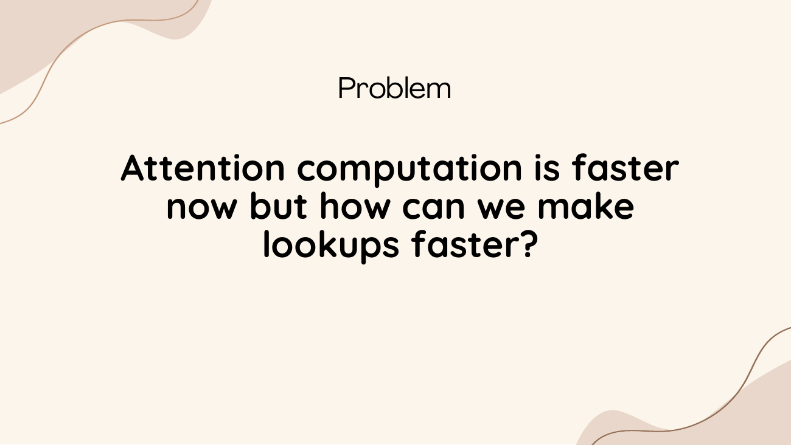
slide 44 · now the lookups are the bottleneck
On the slide
The multiplies are gone, and the lookups are now the slow part.
Slide 45 / 49
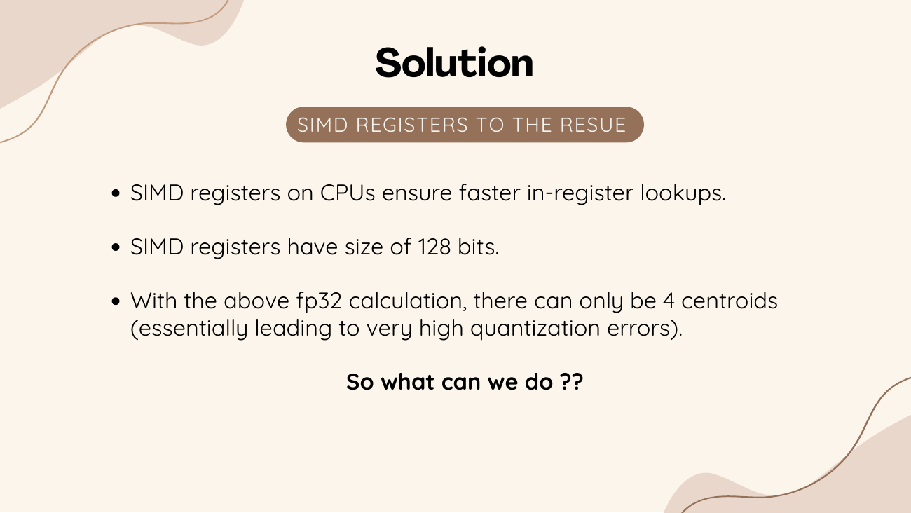
slide 45 · put the table in a register
On the slide
Keep the lookup table inside a SIMD register, where lookups are much faster than in cache. A 128-bit
register holds only four FP32 values, though, which would mean only 4 centroids per chunk.
Why 4 centroids is too few
128 / 32 = 4. Each key chunk would be rounded to one of only four points, which is a very coarse
approximation, and attention scores would be badly off. You need more entries in the same 128 bits.
Slide 46 / 49
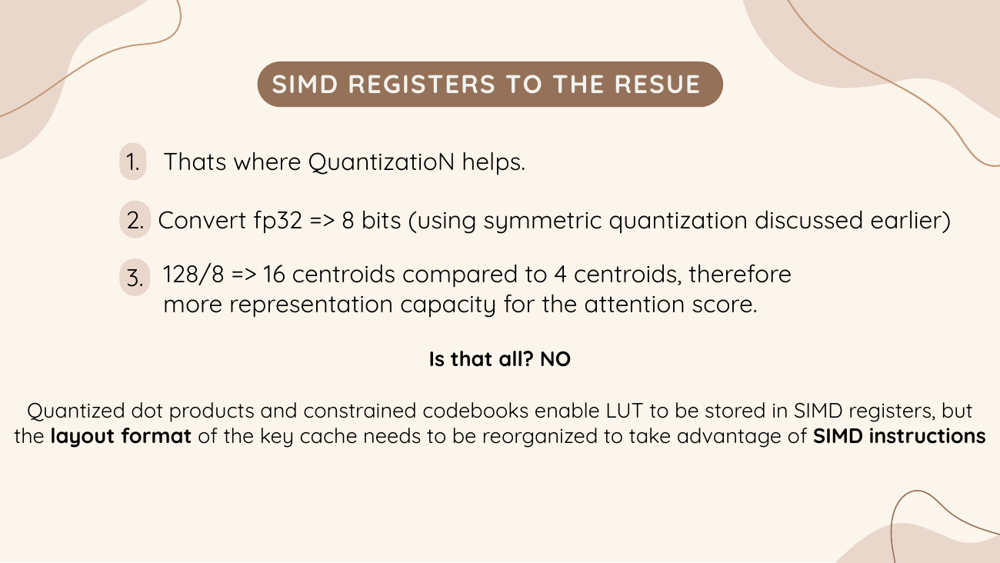
slide 46 · quantize the table to fit 16 entries
On the slide
Quantize the table's entries from FP32 to 8 bits with the symmetric recipe from slide 24. Now 128 / 8 =
16 entries fit in one register, so each chunk can have 16 centroids. The key cache layout also has to
change.
What changes
With 16 centroids, each key chunk's code is 4 bits (24 = 16). The table entries are
approximate dot products rounded to 8 bits. That adds a second small error on top of PQ's, which is the
price of fitting in a register. This is the same quantization from §7, applied to a lookup table
instead of a weight matrix.
Slide 47 / 49
![Left: LLM attention K_cache as n keys × d fp32 values in row-major order. Middle: NoMAD transposed blocked K_code, blocks of 32 keys, with the 4-bit codes c for keys 1 and 17, 2 and 18, and so on packed into each byte, column by column for each chunk s. Right: NoMAD lookup-based attention-score computation, a SIMD register holding LUT_s[0..15] of 8-bit quantized distances, a SIMD shuffle and accumulate over the codes c_s^1 ... c_s^32, with a memory hierarchy pyramid: registers, L1/L2/L3 cache, RAM. Bullets: for one query chunk NoMAD has a 16-value lookup table of 8-bit values. Assume 32 cached key codes, each 0 to 15, so 4 bits. SIMD shuffle operation. Each code is 4 bits but the shuffle takes byte-sized indices, so 2 key codes fit in each byte. 32 keys processed in 2 batches with 16 lookups. Column major instead of row major allows parallel computation for each chunk.](../assets/seminars/S-efficient-lms/slide-47.png)
slide 47 · SIMD shuffle over a transposed key cache
On the slide
How NoMAD does the lookups. The table for one query chunk is 16 bytes in one register. The key codes
are stored in blocks of 32 keys, chunk by chunk, with two 4-bit codes per byte. A single SIMD shuffle
instruction then looks up 16 keys at once, and two shuffles cover the block of 32.
What a shuffle does
A shuffle instruction takes two 16-byte registers. One is a table, and the other holds 16 indices from
0 to 15. It returns 16 bytes, where byte i is table[indexi]. Load the
query's 16-entry table into the first register and 16 key codes into the second, and one instruction
gives you that chunk's partial score for 16 keys.
Why the layout has to change
The shuffle needs 16 codes for the same chunk sitting side by side in memory. The normal
cache stores each key's values together (row-major), which would scatter them. NoMAD stores the codes
for chunk s of keys 1–32 next to each other. Each byte holds two codes, the low 4 bits for one
key and the high 4 bits for another (keys 1 and 17, 2 and 18, and so on). So 16 bytes cover all 32 keys.
One shuffle uses the low halves and another the high halves. Repeating this for every chunk and adding
up gives the 32 approximate scores.
Slide 48 / 49
![Results for CodeLlama-7B with 16-bit and 4-bit weights, standard attention vs NoMAD-Attention (d_sub = 1): time to first token vs prompt length, decoding time vs context length, and tokens per second vs context length; NoMAD decodes faster and its decoding time grows more slowly. Perplexity on PTB and WikiText-2 vs key cache compression factor. Text: decoding time of Llama 7B (fp16) with NoMAD is lower than Llama 7B (4 bits) at 16k context length. MAD attention: 16000·d dot product operations. NoMAD attention: 16d dot product operations.](../assets/seminars/S-efficient-lms/slide-48.png)
slide 48 · NoMAD results
On the slide
On CodeLlama-7B running on a CPU, NoMAD's decoding time grows much more slowly with context than
standard attention's. At 16k context, the 16-bit model with NoMAD decodes faster than the 4-bit model
with ordinary attention. The lower plots show what the key-cache compression costs in perplexity.
Reading the plots
- Decoding time. At about 16k tokens, standard attention takes roughly 730 ms per
token with 16-bit weights and roughly 510 ms with 4-bit weights. NoMAD with 16-bit weights takes
about 470 ms. So switching to NoMAD helped more than cutting the weights from 16 to 4 bits.
- Tokens per second. With 4-bit weights at 16k context, NoMAD gives about 4 tokens
per second against about 2 for standard attention.
- Time to first token. This barely changes. Prefill is a large matrix multiply
either way, and NoMAD targets the decode step.
- Perplexity. Perplexity stays close to the uncompressed model at mild compression
and climbs steeply as compression gets aggressive. On WikiText-2, it goes from about 5.8 to 34.4 and
higher.
⚠ Watch out
"16d operations" counts only the multiply-adds needed to build the tables. With 16
centroids, each query chunk is dotted with 16 centroids, which totals 16 × d MADs across all
chunks (2,048 for d = 128), and that doesn't depend on context length. Standard attention
needs 16,000 × 128 ≈ 2.05 million at 16k context. NoMAD still does work for every cached key, but
that work is shuffles and additions in registers, not multiply-adds. So it still grows with context,
just far more slowly.
§11Questions, and the whole talk in one paragraph
Slide 49 / 49
slide 49 · questions
On the slide
The closing slide.
Good questions to check yourself with
- Why does unstructured 50% sparsity with CSR often use more memory than the dense matrix?
- In OBS, what does the update Δw do, and why does OBD never need one?
- Why does Wanda compare weights within an output row rather than across the whole layer?
- DFloat11 stores sign and mantissa unchanged. Why compress only the exponent?
- What goes wrong in QServe's second level if the first level uses the full ±127 range?
- Why does NoMAD need 8-bit table entries and 4-bit key codes rather than FP32 and 8-bit?
Because the lottery ticket result shows that good sparse
networks are found by training large ones, the talk's recipe is
to train big and compress afterwards. Pruning has to remove
weights in patterns that hardware can use, which means 2:4 or
whole neurons rather than scattered zeros. Choosing what to
remove works best with second-order information (OBD, OBS,
SparseGPT) or with activation sizes (Wanda), and PruneNet and MoNE
show it can be done without calibration data or by replacing
experts with constants. Quantization usually costs less accuracy.
DFloat11 is lossless at about 11 bits because BF16 exponents
carry only about 2.6 bits of information, and QServe reaches 4-bit
weights and KV cache while still using INT8 hardware. NoMAD shows
that the computation itself can change too, by turning attention
scores into register lookups on a CPU. For an exam, be able to
score weights by hand with OBD, OBS and Wanda, quantize a group
the way QServe does, and explain why each method's data layout
suits its hardware.